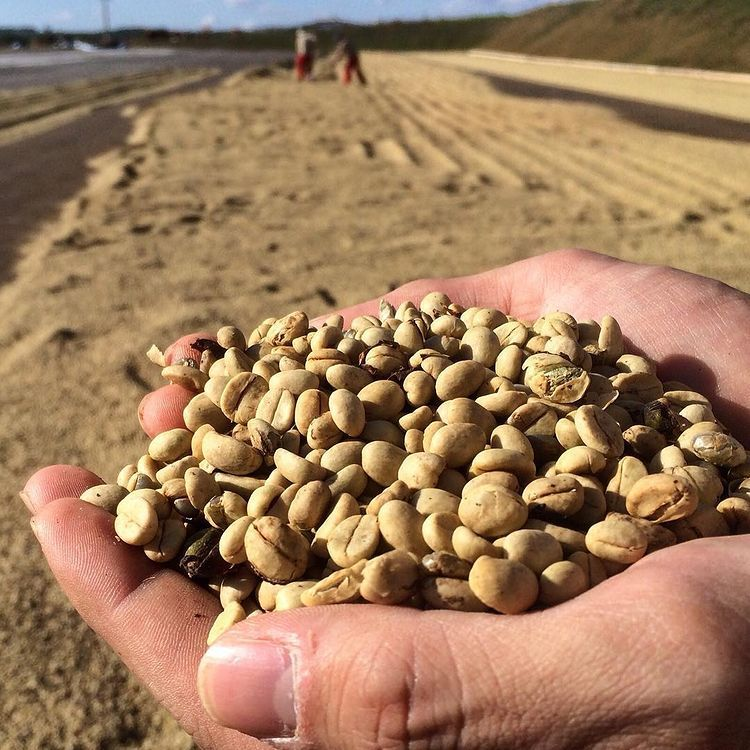
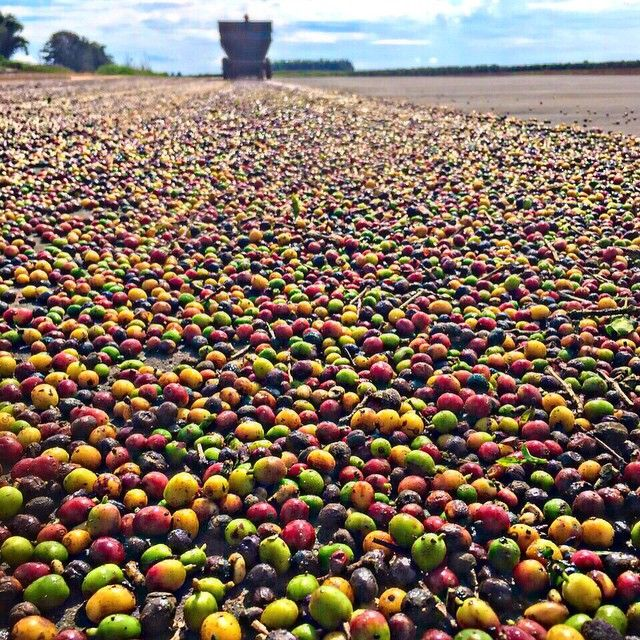
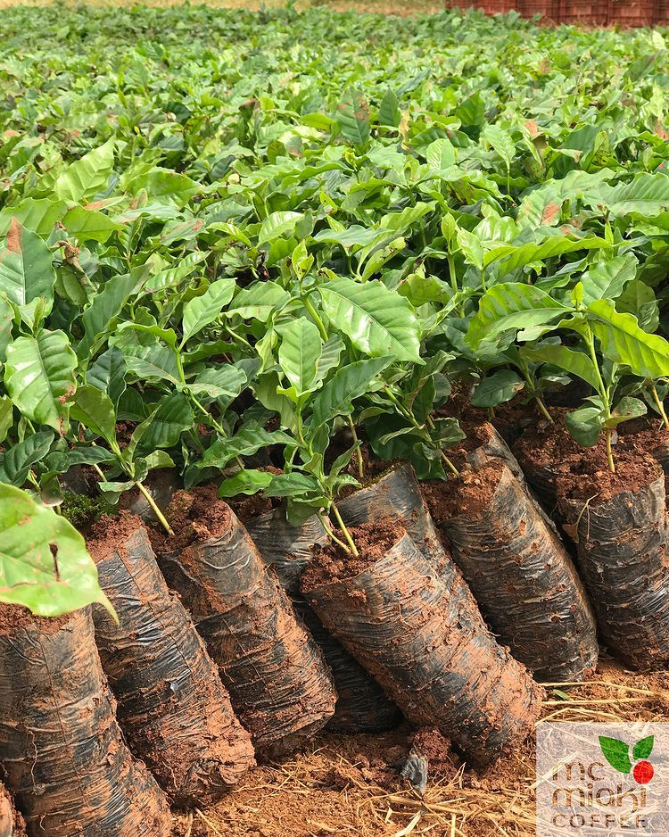
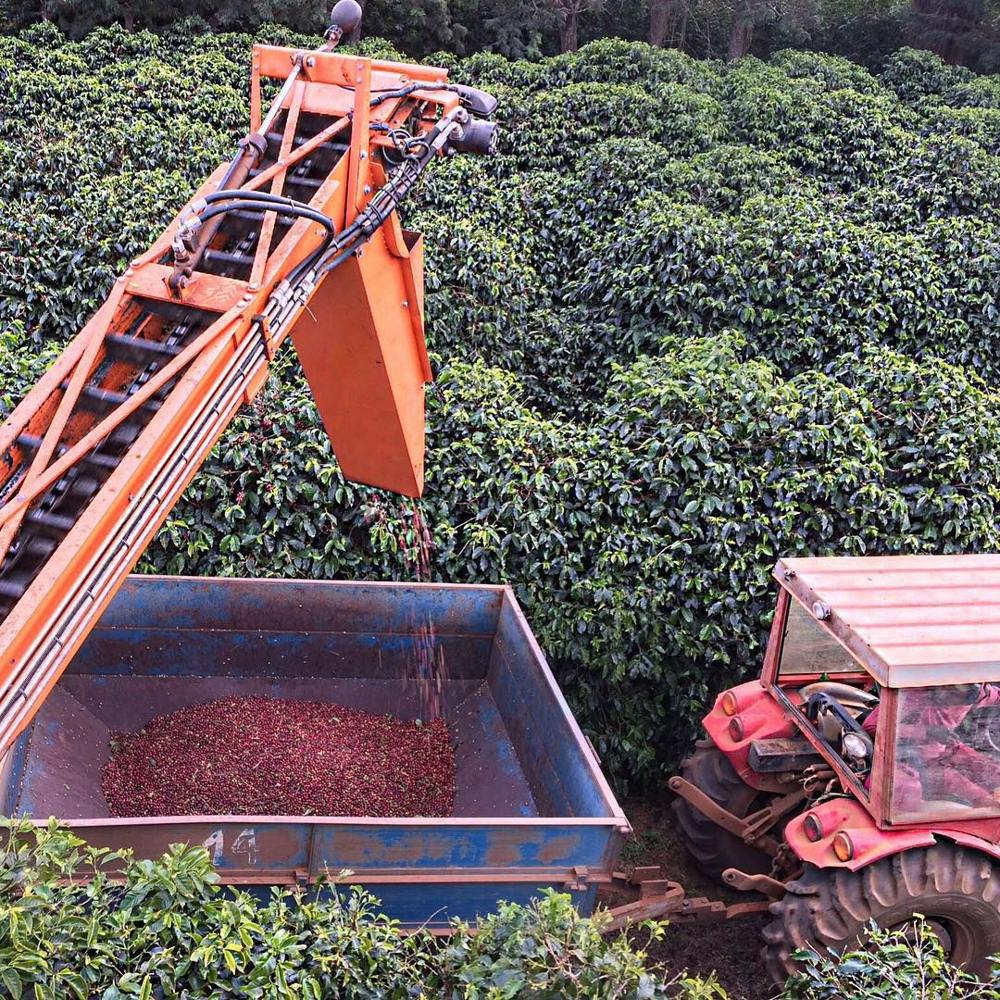
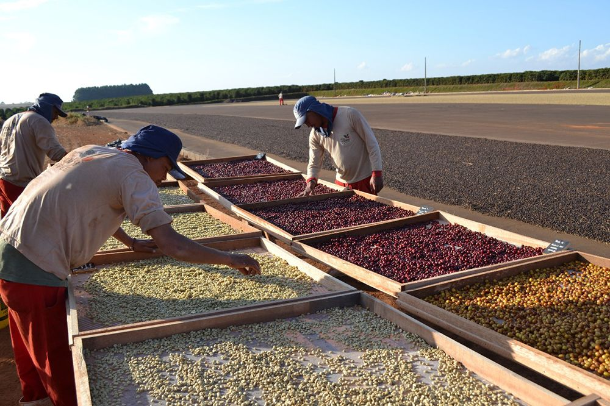
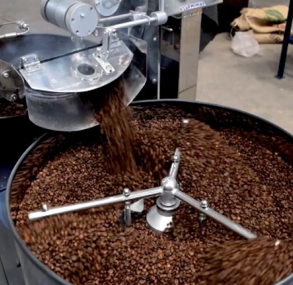

Anos 30
Do Japão para o Paraná
Os avós paternos de Marcos Cézar Miaki chegam do Japão para trabalhar como colonos em fazendas de café no Paraná.
(34) 3831-1481 · contato@mcmiaki.coffee
Patrocínio · Cerrado Mineiro · Brasil
No Chapadão de Ferro, um vulcão que nunca chegou a eclodir deixou um dos solos mais ricos do Cerrado Mineiro. Há três gerações, a família Miaki transforma esse terroir em lotes que o mundo procura.



O que nos move
a alegria de sentir o perfume de uma florada, o olhar atento a cada fruto, a emoção sempre renovada e a satisfação quase sempre incontida ao ver um lote de café produzido.
Família Miaki
01 Terroir
Corte esquemático, fora de escala
O Chapadão de Ferro nasceu de um vulcão que iniciou sua erupção, mas nunca se abriu por completo. O processo empurrou para a superfície uma enorme carga de minerais.
Esses minerais foram incorporados ao solo ao longo do tempo. O resultado são solos extremamente ricos e férteis, raros até mesmo no Cerrado Mineiro.
Com o tempo, surgiu uma lagoa no centro do “vulcão”. Ao redor dela, a parte interna da cratera forma um anfiteatro natural, protegido e alto.
Entre 1.170 e 1.235 metros, a grande amplitude térmica faz as cerejas amadurecerem devagar e concentrarem mais açúcar. Na xícara: acidez pronunciada e, só neste terroir, um leve toque salgado.
“São cafés que apresentam uma acidez pronunciada e, especificamente neste terroir, um leve toque salgado.”
Vizinhos de cafezal
O Chapadão é cercado de floresta nativa, e cerca de 500 hectares de reserva legal dentro das propriedades do grupo preservam a fauna e a flora locais. Não é raro cruzar com eles entre as ruas de café:
02 História
Tradição, orgulho e amor pelo café que se renovam a cada geração. Arraste ou role para atravessar quase um século.
Anos 30
Os avós paternos de Marcos Cézar Miaki chegam do Japão para trabalhar como colonos em fazendas de café no Paraná.
1935
Fruto de muito trabalho, a família conquista sua primeira propriedade de café. Vêm depois os cafezais de Santa Mariana e Formosa do Oeste, no Paraná.

1978
Depois da geada que arrasou os cafezais paranaenses, a família vende as fazendas e muda para Patrocínio, no Cerrado Mineiro. Começa um novo capítulo.
Anos 90
Ao lado do pai, José Miaki, Marcos descobre sua vocação e inicia a própria jornada na produção de café.

2000
Marcos Cézar e a esposa, Brasemir, estruturam a empresa que se expandiria pelos anos seguintes até somar seis núcleos produtores.
2013
O café da MC Miaki vence o Prêmio Ernesto Illy de Qualidade, um dos concursos mais respeitados do café brasileiro.
2015
Os filhos Matheus e Amanda Ribeiro Miaki entram de vez no dia a dia rural e empresarial do negócio.
2018
Criação da Miaki Agronegócios Ltda., que organiza a operação do grupo para a próxima fase.

2020
A illy reconhece Marcos Cezar Miaki como Fornecedor Sustentável do Ano.
2025
3º lugar em duas categorias do Prêmio Produtividade do 33º Seminário do Café da ACARPA: 116 sacas/ha em sequeiro e 104 sacas/ha em área irrigada.
Hoje
Uma empresa verdadeiramente familiar, que preza a própria história e segue inovando a cada safra.

Quem somos
A MC Miaki Coffee é gerida por Marcos Cézar Miaki e sua esposa Brasemir Miaki, com participação ativa dos filhos Matheus e Amanda Ribeiro Miaki, a jovem segunda geração.
Um trabalho apoiado em sólida experiência de campo e consultorias especializadas, que aperfeiçoa continuamente variedades, métodos de cultivo e o pós-colheita. Experiência, novas tecnologias e oxigênio jovem, na mesma mesa.
“No mês passado fomos premiados em um concurso de qualidade, e agora em um de quantidade. Isso traduz que estamos no caminho certo.”
Amanda Miaki, 2025
03 Núcleos produtores
Três núcleos no Chapadão de Ferro, e mais Lajinha, Bom Jardim e Abadia, todos em Patrocínio. Toque em um núcleo para abrir a ficha técnica.
Altitude das lavouras (m)
04 Da muda à xícara
Da formação da muda ao armazenamento, cada lote é acompanhado de perto. Tudo rastreável, do talhão à saca.

Mudas selecionadas e plantio em sulcos abertos com GPS, para linhas perfeitas e uso preciso do terreno.

Manejo guiado por análises de solo e folha, com nutrição na medida e manejo integrado de pragas e doenças.

A florada é onde tudo começa. Depois vêm o chumbinho, o grão verde e a cereja no ponto ideal.

Colhedoras reguladas para respeitar a planta e trazer o café no momento certo de maturação.

Nos talhões que pedem, a colheita é feita à mão, fruto a fruto, para os lotes mais especiais.

Lavador separa os frutos por densidade e o café segue para terreiros e terreiros suspensos, revolvido com cuidado.

A secagem é finalizada em secadores, com temperatura controlada, até o ponto exato de umidade.

Lotes identificados e descansando em tulhas e big bags, prontos para a preparação.

Peneiras, densimétricas e seleção eletrônica deixam cada lote limpo, uniforme e no padrão pedido.

Prova a prova, os lotes são combinados para entregar o perfil de xícara que cada cliente busca.

Torra cuidadosa para revelar o que o terroir construiu ao longo de toda a safra.

Onde todo o trabalho do ano cabe numa xícara.
Nossos cafés, nossas paixões
O mesmo fruto, quatro perfis de xícara. Tudo depende do que se tira da cereja antes da secagem.
Via seca
A cereja seca inteira, com casca e polpa. Mais corpo, doçura intensa e notas frutadas.
Pulped natural
Sai a casca, fica parte da mucilagem. Equilíbrio entre doçura e limpeza na xícara. É o carro-chefe do Chapadão.
Mel
Descascado com quantidade controlada de mucilagem, que carameliza na secagem. Dulçor marcante.
Via úmida
Sem casca e sem mucilagem. Xícara limpa, brilhante, com a acidez do terroir em primeiro plano.
05 Ciclo sustentável
Uma operação sistêmica, intensa em tecnologia e rastreabilidade, com rígidos protocolos de segurança, bem-estar social e cuidado com os recursos naturais.

Precisão
Cada pedaço de terra é conhecido e mapeado. Plantio, adubação e colheita guiados por dados.
Agricultura regenerativa
A braquiária cresce entre as ruas e, depois da roçada, volta para perto das plantas. Retém umidade, segura as invasoras, evita a compactação e aumenta a matéria orgânica.

Água
Água no momento certo para proteger a safra em anos secos e quentes.

Pessoas
Capacitações em operação de trator, aplicação de defensivos, espaço confinado, caldeira e trabalho em altura.
No dia a dia
Todas as fazendas certificadas
06 Premiação
3º lugar no Prêmio Produtividade em duas categorias: sequeiro (116 sc/ha) e irrigado (104 sc/ha).
Reconhecimento à cafeicultura sustentável praticada em todos os núcleos.
Finalista em 8 edições: 2012, 2013, 2014, 2015, 2016, 2018, 2019 e 2020.
Campeão nacional.
Núcleo Recanto finalista na categoria Cereja Descascado.
Núcleo Shalom finalista na categoria Natural.

07 Para outros produtores
O armazém do grupo, criado para armazenar e preparar os cafés dos núcleos MC Miaki, também atende produtores da região.
Fotos e filmes
08 Fale conosco
Compradores, torrefações, produtores e imprensa: escreva para a gente e retornamos o quanto antes.